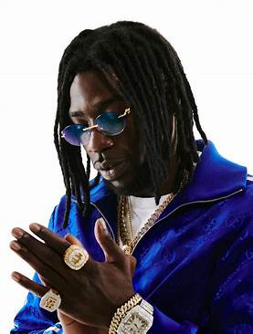

Ibrahima Diakité, dit Gazo, né le 5 août 1994 à Châteauroux (Indre), est un rappeur et auteur-compositeur-interprète français. Il commence la musique en solo sous le nom de Bramsou ainsi qu'avec un groupe nommé Barrodeur Music.
Gazo sort le 26 février 2021 son premier projet intitulé Drill FR, certifié disque de platine, puis la mixtape KMT le 1er juillet 2022, certifiée triple disque de platine.
Ibrahima Diakité1, né le 5 août 1994 à Châteauroux, grandit au sein d'une famille guinéenne. Il est le benjamin d'une fratrie de cinq enfants et habite dans de petits appartements de Belleville puis du quartier de la Roquette dans le 11e arrondissement de Paris2. Il est cousin avec le rappeur MHD3.
Dès ses 11 ans, l’adolescent est placé dans un foyer éducatif sur décision de justice4,5. Il arrête l’école en sixième, renvoyé de son collège6, et enchaîne les placements en foyer et en famille d'accueil jusqu'à sa majorité. Dès lors, il est SDF et vit entre des squats de Saint-Denis et la rue, sans papiers d'identité, ayant recours à diverses activités jugées illicites2,5. La trap devient son échappatoire.
En 2017, il est incarcéré une première fois en maison d’arrêt, où il rencontre notamment Rim'K qui lui conseille de se ressaisir pour ne pas y retourner. Deux semaines après sa sortie, il y est à nouveau6,7.
Gazo débute le rap sous le nom de Bramsou, parfois Bram's, en référence à son prénom, Ibrahima. Dès le CM2, il écrit des textes pour "clasher" l’un de ses amis. Plus tard, il fonde un groupe avec d’autres jeunes de son foyer, rencontrés lors d'une fugue : le Barrodeur Music8. La musique est sa seule échappatoire et lui permet d'oublier son quotidien difficile. Il reçoit même un coup de pouce de deux rappeurs : « Je faisais 5000 vues. Puis y'a Gato (rappeur du 92i) qui m’a partagé sur sa page Instagram, du coup Booba avait vu ça, et il a reposté. Et après ça a commencé comme ça. »9.
En 2017, il collabore plusieurs fois avec le 4Keus Gang, la seconde entité du groupe 4Keus et l'ancien groupe de Tiakola, avec qui il fera un single de platine en 2021 et deux en 2022. Aussi, il fait partie d'albums compilations où se trouvent notamment les rappeurs désormais connus Leto, Bolemvn ou Guy2Bezbar.
Selon ses déclarations, Bramsou est un nom qui lui a fermé des portes. « Je n’avais plus rien à perdre. Il y avait Bramsito, Brvmsoo La Deb et moi qui m’appelais Bramsou, je passais pour un fake car ils avaient plus de lumière10. » C'est ainsi qu'il change de style musical et prend le nom de Gazo, un gazo étant le surnom des personnes de confiance dans son quartier, ceux sur qui on peut[style à revoir] compter en cas d'ennuis. Il déclare : « J’ai commencé par le rap puis j'ai découvert la drill, quelque chose de sale qui reflète ce qui se passe dans les quartiers défavorisés mais à la fois très mélodieux et dansant même, puisque ça a pris ses racines en Jamaïque11. »
En octobre 2019, il débute une série de six freestyles « Drill FR » qui va le faire connaître nationalement, lui permettant en août 2020 d'être le premier artiste à signer sur le label Epic Records France de Sony Music12, dont le penchant américain comporte notamment Drake et Travis Scott. Il avouera plus tard qu'il aurait arrêté la musique si le premier son de cette série n'avait pas décollé : « j'étais à bout de souffle »13. Par chance, cela se fait quand la drill fait un carton en France, notamment avec Dior de Pop Smoke. Il a justement samplé ce morceau dans Drill FR 26.
Le 18 juin 2020, en collaboration avec Freeze Corleone, Gazo propose Drill FR 4, considéré encore en 2022 comme le son de drill francophone. Le 27 août 2020 sort le morceau Inceste, qui marque les débuts de Gazo avec Sony. Le 13 octobre 2020 sort le cinquième et actuellement dernier épisode de sa série de freestyle « Drill FR » en collaboration avec Hamza14. En mettant un certain nombre de chansons sur YouTube, il attire l'attention de Gims qui lui propose un titre commun sur son propre album Le Fléau5, sorti le 4 décembre 2020.
Fort de son nouveau succès, Gazo dévoile le titre Tchin 2X15, apparaît dans l'album de Kaaris, 2.7.0 sur le morceau Five-O16 ou encore dévoile le morceau Kassav en collaboration avec Tiakola17 avant de sortir sa première mixtape, intitulée Drill FR, le 26 février 202118. Drill FR s'écoule à 8 618 exemplaires durant sa première semaine d'exploitation19. Ce premier projet se hisse à la première position du classement Top Albums20 et est certifié disque d'or en mai 202121, puis disque de platine en janvier 202222.
Gazo collabore sur sa première mixtape avec des artistes étrangers, comme les Britanniques Unknown T, Pa Salieu, Headie One et Russ Millions, l'Allemand Luciano ou encore les Italiens Lazza, Capo Plaza, Nko, Baby Gang et Tony Effe4. Aussi, depuis Drill FR 4, Gazo sous-titre ses clips en anglais, ce qui montre bien sa volonté de s'exporter au-delà des frontières de la francophonie34. En mars, il est invité sur Reggae & Calypso par Russ Millions et sa performance est jugée supérieure à celle des six anglophones du morceau6.
Le 11 juin 2022, Gazo annonce la sortie de sa deuxième mixtape KMT pour le 1er juillet 202235. Son titre fait référence au nom que les égyptiens donnaient à leur pays : Kemet, qui signifierait "la terre noire"36. On y retrouve le titre Molly, qu'il avait initialement sorti en exclusivité chez COLORS37.
Trois versions de l'album sont disponibles en précommande et distribuées aléatoirement, avec chacune un bonus track inédit38. Ce sont Bodies Remix (feat. Unknown T, Santana et ElGrandeToto), La Taupe et Adapter.
En 24h, le projet compte 4,38 millions de streams sur Spotify France, ce qui en fait le troisième meilleur démarrage de l'année39. KMT s'écoule à 27 696 équivalents ventes en une semaine, dont 4 247 albums physiques40, et passe la barre des 50 000 le 22 juillet 2022, ce qui permet à Gazo d'obtenir son deuxième disque d'or, trois semaines après sa sortie (contre trois mois pour Drill FR)41.
KMT est numéro un du Top Albums pendant cinq semaines (celles des 22 et 29 juillet, ainsi que 12, 19 et 26 août)42. Le 6 septembre 2022, KMT dépasse Sans visa de Soolking et devient l'album français sorti en 2022 le plus streamé sur Spotify, avec 197 millions d'écoutes.
Le 5 juin 2023, près de 11 mois après sa sortie, KMT est à la dixième position du top albums de la semaine. Voilà 46 semaines que le projet n'en est pas sorti44.
Le 11 février 2023, Gazo annonce que son nouveau projet est prêt à 70 %45, puis à 85 % le 23 février. Les 95 % ne sont atteints que le 19 septembre, puis 98 % le 12 octobre46 et 99.9 % le 18 octobre.
Le 15 mars 2023, il dévoile le titre NO LÈCHE en collaboration avec Kerchak, Leto et Favé47,48.
En attendant la sortie de son projet, Gazo apparait sur les albums de Landy (Brave, avec Maybach), Maes (Omerta, avec La Pègre) et Naps (En temps réel, avec C'est carré le S, en feat avec Ninho).